File: 000510.gt.txt (if the image is defective, simply delete all Arabic text and the line will be excluded)
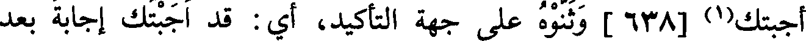
أجبتك(1) [638 ] وثنوه على جهة التأكيد، أي : قد أجبتك إجابة بعد
File: 000511.gt.txt (if the image is defective, simply delete all Arabic text and the line will be excluded)
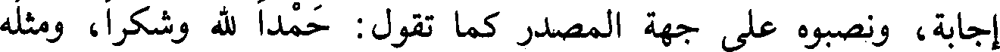
إجابة، ونصبوه على جهة المصدر كما تقول : حمدا لله وشكرا، ومثله
File: 000512.gt.txt (if the image is defective, simply delete all Arabic text and the line will be excluded)
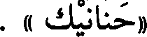
« حنانيك » .
File: 000513.gt.txt (if the image is defective, simply delete all Arabic text and the line will be excluded)
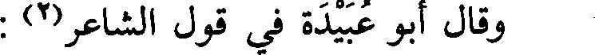
وقال أبو عبيدة في قول الشاعر(2) :
File: 000514.gt.txt (if the image is defective, simply delete all Arabic text and the line will be excluded)
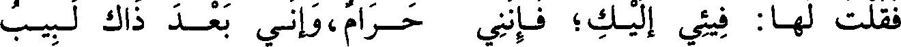
فقلت لها: فيئي إليك؛ فإنني حرام،وإني بعد ذاك لبيب
File: 000515.gt.txt (if the image is defective, simply delete all Arabic text and the line will be excluded)
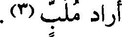
أراد ملب(3) .
File: 000516.gt.txt (if the image is defective, simply delete all Arabic text and the line will be excluded)
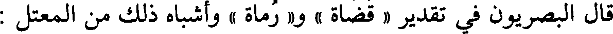
قال البصريون في تقدير « قضاة » و« رماة » وأشباه ذلك في المعتل :
File: 000517.gt.txt (if the image is defective, simply delete all Arabic text and the line will be excluded)
فعلة ، ولا يكون هذا في جمع الصحيح .
File: 000518.gt.txt (if the image is defective, simply delete all Arabic text and the line will be excluded)
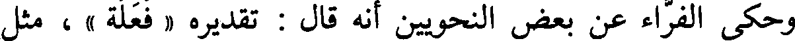
وحكى الفراء عن بعض النحويين أنه قال : تقديره « فعلة » ، مثل
File: 000519.gt.txt (if the image is defective, simply delete all Arabic text and the line will be excluded)
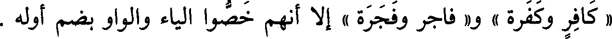
« كافر وكفرة » و« فاجر وفجرة » إلا أنهم خصوا الياء والواو بضم أوله .
File: 000520.gt.txt (if the image is defective, simply delete all Arabic text and the line will be excluded)
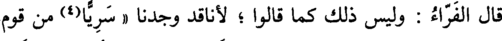
قال الفراء : وليس ذلك كما قالوا ؛ لأناقد وجدنا « سريا(4) من قوم
File: 000521.gt.txt (if the image is defective, simply delete all Arabic text and the line will be excluded)
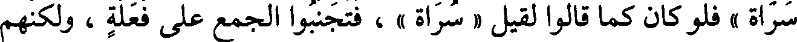
سراة » فلو كان كما قالوا لقيل « سراة » ، فتجنبوا الجمع على فعلة ، ولكنهم
File: 000522.gt.txt (if the image is defective, simply delete all Arabic text and the line will be excluded)
File: 000523.gt.txt (if the image is defective, simply delete all Arabic text and the line will be excluded)
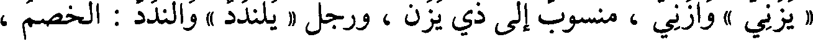
« يزني » وأزني ، منسوب إلى ذي يزن ، ورجل « يلندد » وألندد : الخصم،
File: 000524.gt.txt (if the image is defective, simply delete all Arabic text and the line will be excluded)
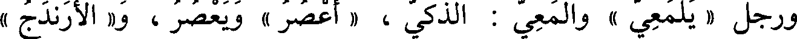
ورجل « يلمعي » وألمعي : الذكي ، « وأعصر » ويعصر ، و«الأرندج »
File: 000525.gt.txt (if the image is defective, simply delete all Arabic text and the line will be excluded)
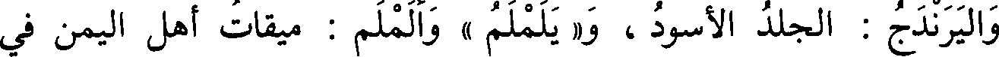
واليرندج : الجلد الأسود ، و«يلملم » وألملم : ميقات أهل اليمن في
File: 000526.gt.txt (if the image is defective, simply delete all Arabic text and the line will be excluded)
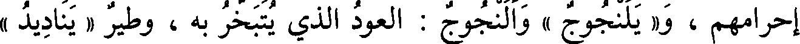
إحرامهم ، و« يلنجوج » وألنجوج : العود الذي يتبخر به ، وطير « يناديد »
File: 000527.gt.txt (if the image is defective, simply delete all Arabic text and the line will be excluded)
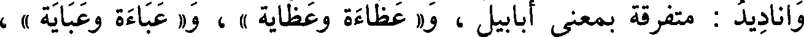
وأناديد : متفرقة بمعنى أبابيل ، و« عظاءة وعظاية » ، و« عباءة وعباية » ،
File: 000528.gt.txt (if the image is defective, simply delete all Arabic text and the line will be excluded)
و« صلاءة وصلاية » .
File: 000529.gt.txt (if the image is defective, simply delete all Arabic text and the line will be excluded)
باب ما يقال بالهمز وبالواو(1)
File: 000530.gt.txt (if the image is defective, simply delete all Arabic text and the line will be excluded)
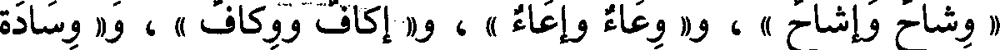
« وشاح وإشاح » ، و« وعاء وإعاء » ، و« إكاف ووكاف » ، و« اوسادة
File: 000531.gt.txt (if the image is defective, simply delete all Arabic text and the line will be excluded)
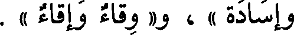
وإسادة » ، و« وقاء وإقاء » .
File: 000532.gt.txt (if the image is defective, simply delete all Arabic text and the line will be excluded)
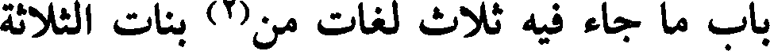
باب ما جاء فيه ثلاث لغات من(2) بنات الثلاثة
File: 000533.gt.txt (if the image is defective, simply delete all Arabic text and the line will be excluded)
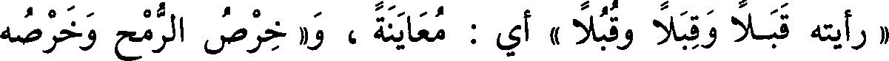
« رأيته قبلا وقبلا وقبلا » أي : معاينة ، و« خرص الرمح وخرصه
File: 000534.gt.txt (if the image is defective, simply delete all Arabic text and the line will be excluded)
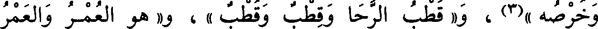
وخرصه »(3) ، و« قطب الرحا وقطب وقطب » ، و«هو العمر والعمر
File: 000535.gt.txt (if the image is defective, simply delete all Arabic text and the line will be excluded)
والعمر » ، وكذلك « العصر والعصر والعصر » : الدهر ، وهو« الولد والولد
File: 000536.gt.txt (if the image is defective, simply delete all Arabic text and the line will be excluded)
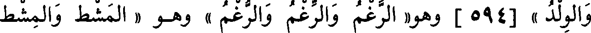
والولد » [594 ] وهو« الرغم والرغم والرغم » وهو « المشط والمشط
File: 000537.gt.txt (if the image is defective, simply delete all Arabic text and the line will be excluded)
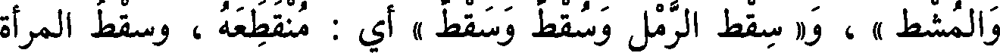
والمشط » ، و« سقط الرمل وسقط وسقط » أي : منقطعه ، وسقط المرأة
File: 000538.gt.txt (if the image is defective, simply delete all Arabic text and the line will be excluded)
والنار فيه اللغات الثلاث(4) ، و« الفتك والفتك والفتك » أن يقتل(5) الرجل
File: 000539.gt.txt (if the image is defective, simply delete all Arabic text and the line will be excluded)
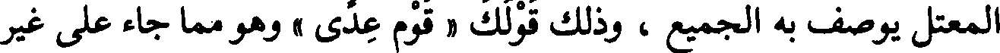
المعتل يوصف به الجميع ، وذلك قولك « قوم عدى » وهو مما جاء على غير
To Save: `Ctrl+s`, make sure to choose `Webpage, complete`!